01
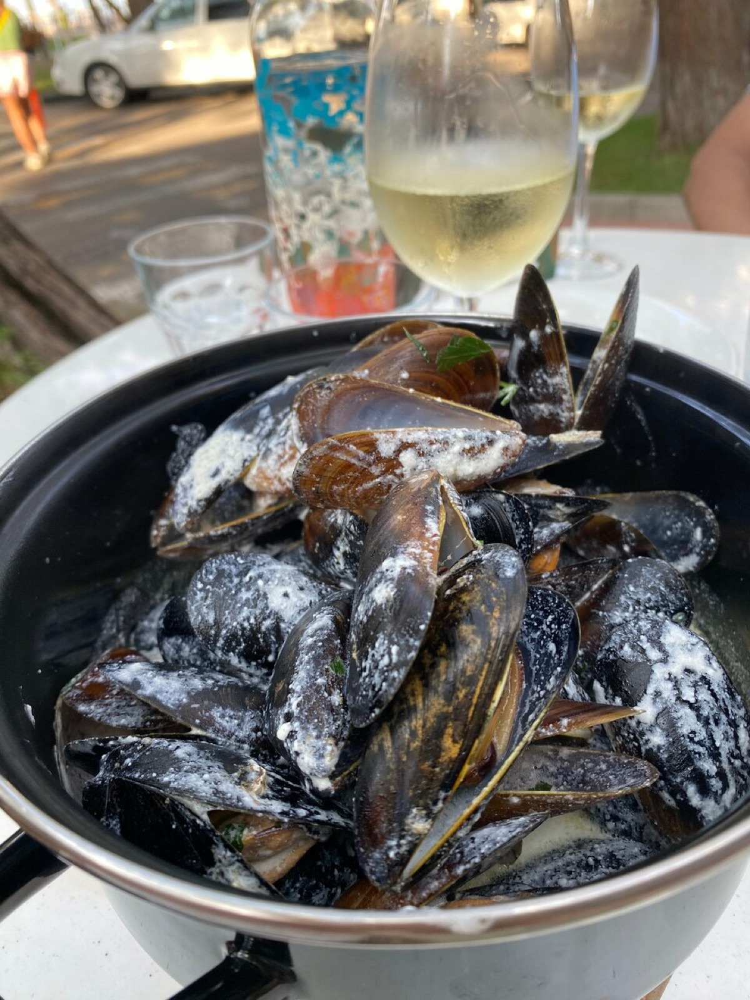
Мидии в сковороде
Черноморские мидии в пряном бульоне — вымакивать нашим хлебом.
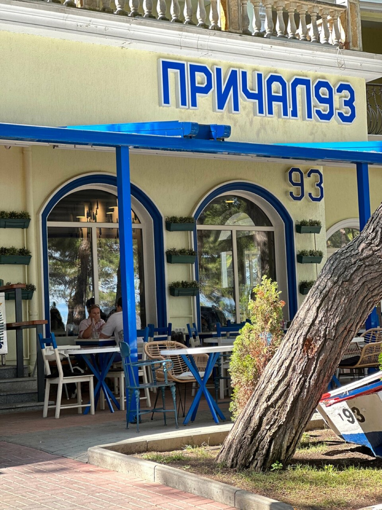
Печём хлеб каждое утро, жарим рыбу с побережья и наливаем вино под соснами у набережной. Сойдите на берег — причал 93.
Каждое утро здесь пахнет своим хлебом, а к обеду — рыбой с побережья. Всё остальное — вино, мидии, сосны и море в двух шагах — прилагается само.

Черноморские мидии в пряном бульоне — вымакивать нашим хлебом.
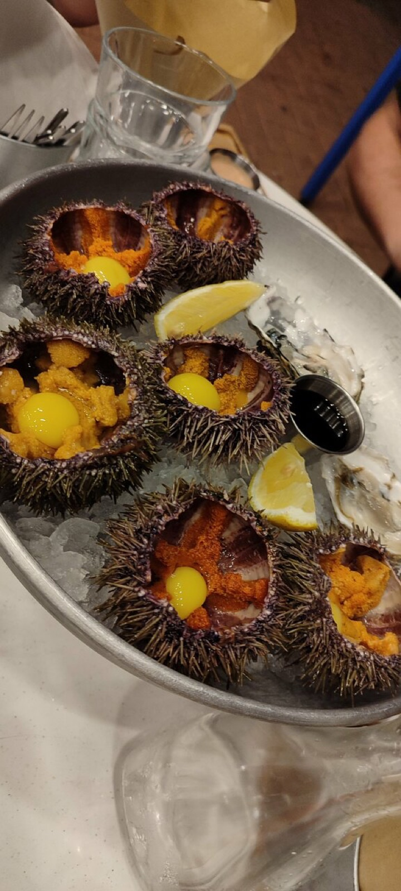
С лимоном и ложечкой — деликатес прямо с побережья.
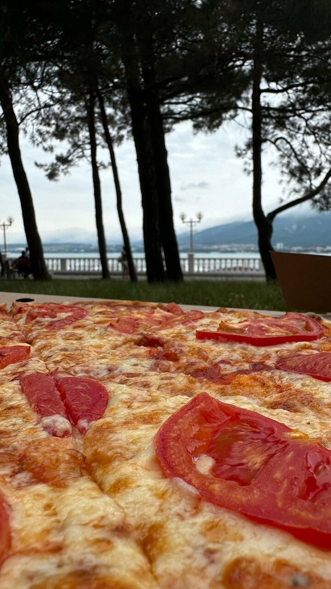
Тесто на нашей закваске, тонкий край, щедрая начинка.
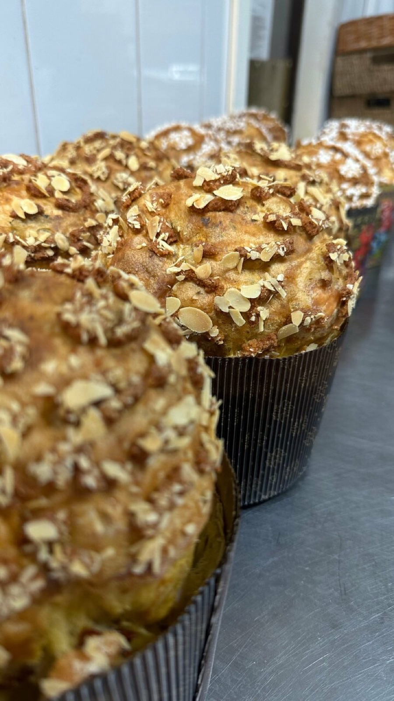
Хлеб и сдоба из своей пекарни — тёплые, пока не разобрали.
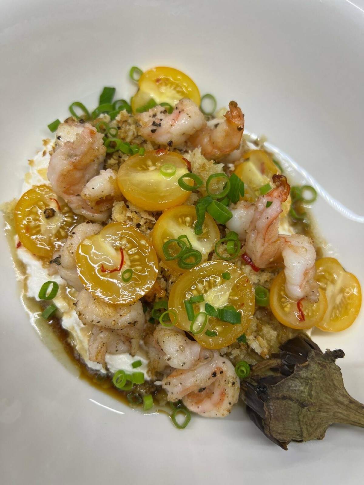
Жареные креветки, молодой картофель, чеснок и травы.
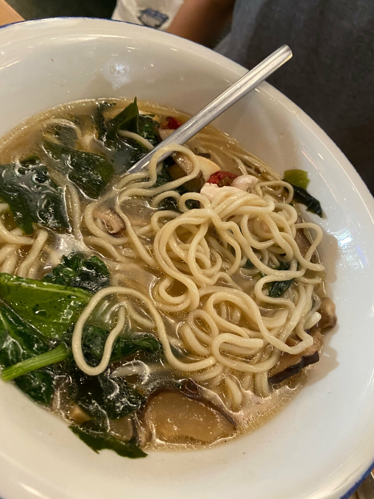
Домашняя лапша с травами — когда хочется просто и вкусно.
Пекарня — сердце «Причала 93». Тесто ставим с вечера, первую партию достаём к открытию: хлеб на закваске, сдоба, основа для пиццы. К рыбе, к мидиям, к вину — всегда свой хлеб, ещё тёплый.
У входа под соснами стоит настоящая бело-синяя лодка с бортовым номером «ПРИЧАЛ 93». Вывески — керамика и мозаика ручной работы, стены украшены бутылками. Здесь всё сделано руками — и видно, что с любовью.
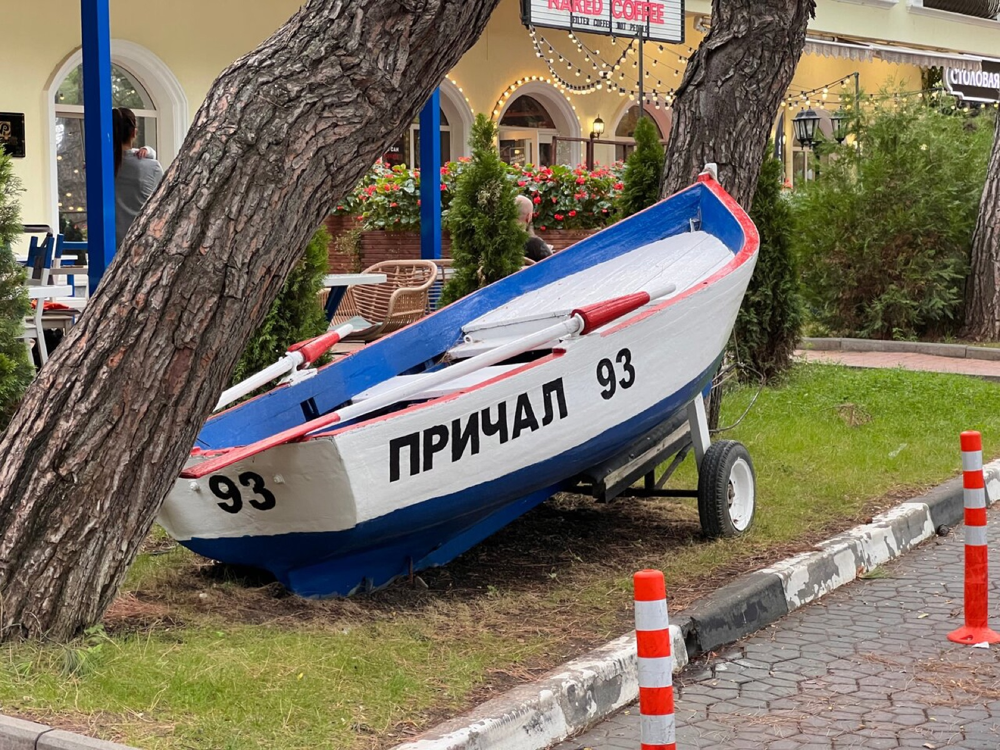
«Пришвартовались однажды — и теперь каждый вечер отпуска заканчивается здесь».
из отзывов гостей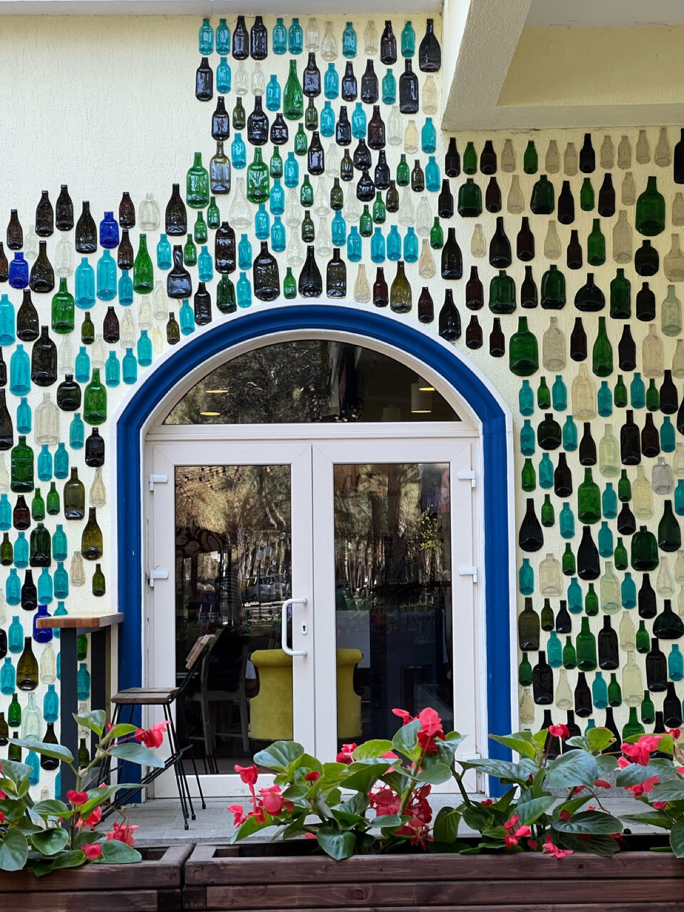
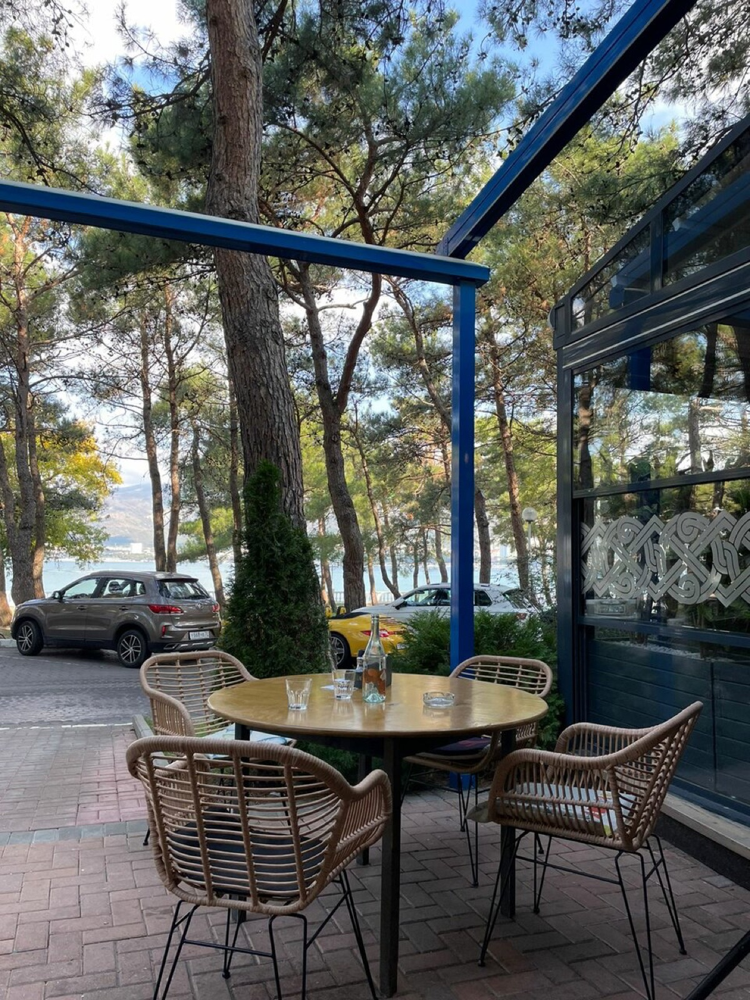
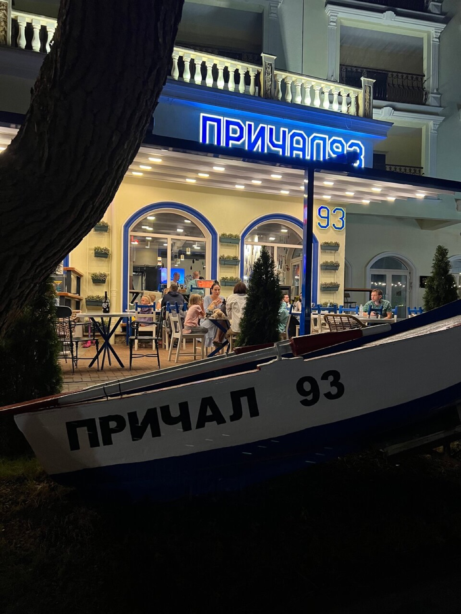
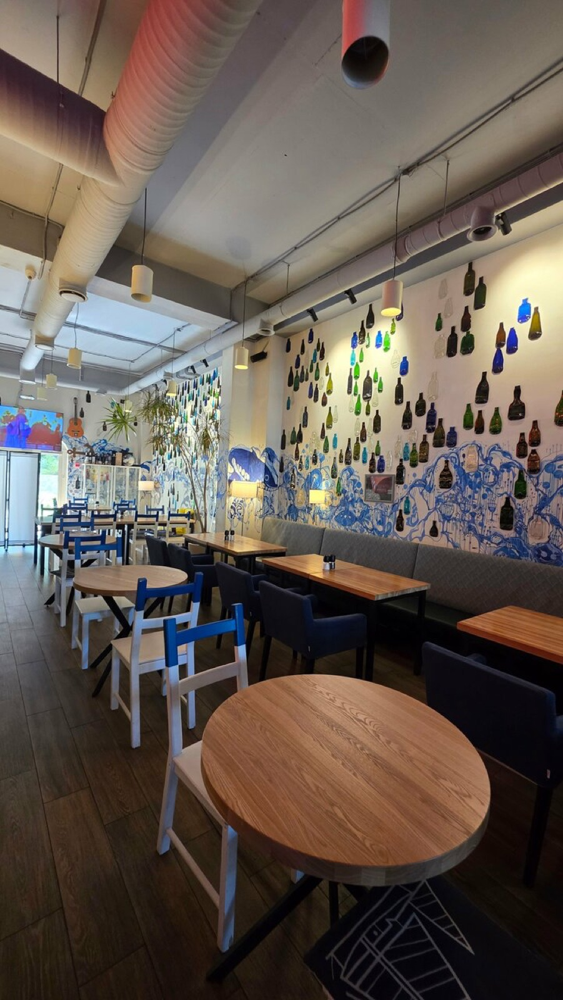
Вечером терраса расходится первой — бронируйте заранее.
Геленджик, Революционная, 47 · сосновый парк у набережной